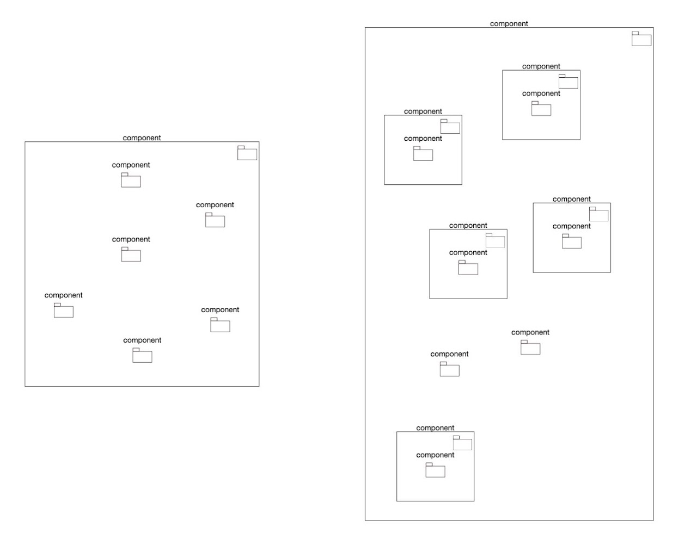

Let's innovate together by prototyping and assessing value of Semantic Cartography

Let's innovate together by prototyping and assessing value of Semantic Cartography
The ArchiMateCG editor and analyser is a solution aiming at assessing the value of using ArchiMate Interactive Compound Graphs for the various stakeholders involved in architecting the enterprise for its digitalisation and who adopted the ArchiMate® 3.2 language as the standardized architecture description language.
ArchiMateCG aims at serving actors dealing with End to End Digital Processes, Model Based System Engineering, Product Lifecycle Management industrial approach (as defined by CIMDATA) and Interoperability of Enterprise Application.
For this, ArchiMateCG supports creation of advanced interactive compound graphs visualization and algorithms in order to analyze architecture descriptions and blueprints produced using the ArchiMate language.
ArchiMateCG is not intended to replace legacy ArchiMate modeling platforms and enterprise repositories, but to complement and extend them with previously described features.
Consequently, ArchiMateCG comes with various import and export functionalities, and complementary sets of scripts for Archi and Enterprise Architect.
ArchiMateCG is realized by combined usage of standardized Web technologies such as HTML, SVG, and JavaScript, in order to run on and require only a Web Navigator.
Finally, ArchiMateCG is a research demonstrator, aiming at demonstrating and assessing research results on Continuous Operational Interoperability for digital collaboration within and between enterprises applying Model Based approaches. It will in particular address the combined usage of Linked Data, Semantic Web, Standardized Application Protocols, Advanced visualization technologies and Graph based technologies.
It doesnt prevent you to use it for quite simpler purpose, quick visualisation of data as graphs with nested nodes, importing data or creating it as easily than in a mindmap solution.
ArchiMateCG is an all initiative launched end of 2024 aiming at accelerating collectively innovation required for solving issues related to secured continuous digital collaboration in a more and more VUCA environment.
The initiative was launched by Dr Nicolas Figay, external LIRIS' collaborator, but also ISO (SC4 TC184), Airbus, ASD Strategic Standardisation Group and OpenPeopleFactoryexpert, in order to disseminate and promote his research work (PHD "Interoperability of Technical Enteprise Interoperability" and HDR on "Continuous Operationa Interoperability" ) and derived proposed practices for the required improvment of the State of the Art and of the State of the Practices. Indeed, many enterprises and organisations are today at risks when considering the difficulties to set up sustainable secured digital collaboration with the required continous operational continuity.
This is true in particular with the growing rate of emerging technologies such as blockchain, Generative AI, Data Mesh, System Modeling or Digital Twins.
Publishing ArchiMateCG but also some other tools as open source is not only aiming at disseminating research results but also at onboarding various profile of users and stakeholders for further development and exploration.
Import models from Archi and other ArchiMate models repositories in order to take advantage of the functionalities provided by ArchiMateCG
This can be made relying on:
Collapse or Extend the graph nodes taking advantage of automated layouts adapted to compound graphs.
This can be done on:Collapse or Extend the Graph Edges taking advantage of automated layouts adapted to compound graphs.
This can be done on:Let's change the presentation of a composite model.
This can be done by:The composition relationships are preserved, even in not displayed on the graph.
You can also shows graph content as dynamic interactive matrixes, displaying various graph characteristics or calculate weights.
Let's manipulate the graphs in order to show what you expect
This can be done by:The reverse operations can be made.
Selections can be made manually, through a filter expression on data (properties of nodes and edges) based on shortest path or neighborhood.
Let's Create complementary models elements, as nodes, compound nodes and edges
This can be done by relying on :The goal is to reach the same level of ergonomy than mindmap solutions.
Let's visualize, modify and create properties of the model elements and relationships
This can be done with :The goal is to access both data model and visual properties of the nodes, in order to control both the content and how it is rendered.
Let's color the graph elements according two their values for a given property
This can be done by :The goal is to perform some visual mining in order to support the analysis of an architecture.
Let's visualize the graph as matrixes
With complex graph with many relations, you have to face the "hairball" effect. Adjacency matrixes provides alternative way for visualizing a graph. But many other kinds of matrixes can be derived for analysing an architecture:Proposing only a simple adjacency matrix with the current version, it is intended to extend the proposed interactive matrixes with those bringing value for the architecture analysis in future versions, including matrixes suited for compound graphs with lines and columns which can be collapsed and extended.
Let's filter models according to Architectural viewpoints
Based on ISO 42010 (Systems and software engineering — Architecture description), ArchiMate proposes a set of predefined viewpoints, which are suited for guiding production of views suited for different kind of stakeholders, having given concerns and purposes. ArchiMateCG allows to filter the palette according to these viewpoints.
Combined with the ability to export a visible graph as an ArchiMate view based on the Open Exchange Format and to preserve identifiers during import and export, it makes it possible to quickly push compound diagrams resulting from you analysis in you usual ArchiMate modeling tools supporting import of Open Format.
It is also plan to create you own viewpoints, or to use those which will be defined by the NATO Architecture Framework V4 when available
Let's visually traverse the graph
The model being a graph, it is possible from a node, an edge or a group of them to select:Future versions will extend graph traversal to compound graph traversal, which is more suited for Composite Graph analysis
Let's develop exports script on your preferred tools (Archi, Enterprise Architect, etc.) in order to feed the ArchiMate Compound Graph viewer and analyzers.
ArchiMateCG comes with a set of jArchi scripts allowing to make some preprocessing before to export data to ArchiMateCG :The goal is to be able to aggregate data coming from various model repositories relying on various products and languages, in order to aggregate them and perform required analysis on you desktop.
Let's produce pivot tables from the graph
An alternative way for producing matrixes from a graph is to generate pivot tables relying on legacy javascript libraries.
The produced pivto tables can in addition dal with fugures in order to perform some analytics.
Let's introduce new sets of icons dedicated to a particular topic
It is possible to add new sets of icons in the palette dedicated to a given topic which can be, or not, an extension of ArchiMate, or an alternative modeling language to be used in conjunction with ArchiMate.
An example is given with the "Complexity" tool which is about describing the compelx connected systems industry is dealing with, being for aeronautic, automative, space or city surveillance, with associated enterprise application families related to PLM, MES, MOM, ERP, etc.
Such visual elements can enrich the semantic of the cartography, using symbols not only for ArchiMate language constructs, but also for the kind of systems which are bing developed or supporting the working organisations.
Let's project your architecture on an interactive timeline
Let's project sets of architecture elemetns on an interactive timeline providing a synchronized view of the some predefined graph elements owning time related properties, such as starting and enging planned and actual date, or configuration management information related to time.
Related to the "timeline" tool, alpha version withc illustrates the feaseability
Let's automate algorithms defined for relevant architecture analysis
Relying on the set of available features for graph analytics and for advanced visualization, it is possible to create and includes modules launching parameterized treatments on subsets of your model, eventually filtered by relevant viewpoints, which are suited for such or such Architectural analysis, and to display it in the appropriate presentations for communication or results publishing, being in a document or in models repositories.
Let's register some animation on top of model for story telling applied to your model
It is possible to automate and registed a set of interactions with you graph model as an animation, which you can make available in ArchiMateCG and run on you model.
It can be used for communication purpose, or as a way to publish some results as dynamic animation, and not static (office documents) or impossible to change (videos) documents./p>